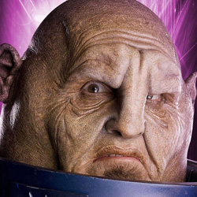

Home| The Doctors| The Companions| The Villians| Show History
|
Home| The Doctors| The Companions| The Villians| Show History |
|
SontaransThe Sontarans are a fictional extraterrestrial race of humanoids from the British science fiction television series Doctor Who, and also seen in spin-off series The Sarah Jane Adventures. A warrior race who "live to kill", they are characterised by their ruthlessness and fearlessness of death. They were created by writer Robert Holmes. |
Brendan Davy Monica DuCong'e Eric Eyler Kayleen Garcia Katie Hyche Ryan Moeller |
Christine O'Brien Alex Recinos Julia Schwartz Madeleine Schwartz Ann Marie Skjold Ashly Wilkins |
[Reference Links] |